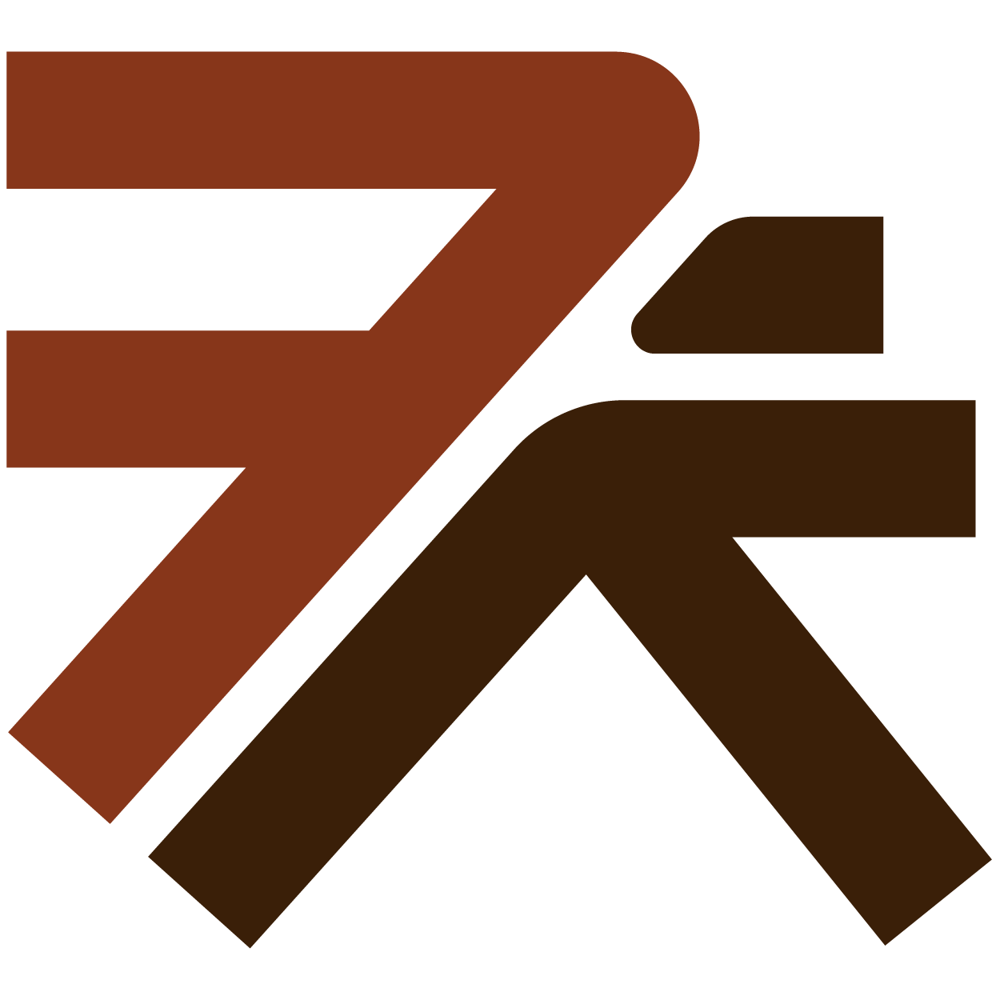

서울
<콜드 스모킹>으로 인한 훈연향이 특징
부드러운 안심이 시그니처
헤키
<드라이 에이징>과<웻 에이징> 숙성이 특징
다양한 소스와 즐기고 싶으면 추천
리애
등심을 주문하면 특등심이 랜덤으로 제공
수제 소스가 정말 맛있다
카츠바이콘반
상큼한 향의 수제 소스로
질리지 않게 먹을 수 있다
수제 카레 추천!
오제제
두껍지 않은 튀김옷이 특징
소스는 후반부에 제공해준다
일월카츠
10일 숙성 고기가 특징
저온 튀김 2번 + 오븐 1번 = 부드러운 육질
간 무/유자 폰즈와 함께 먹으면 별미
카와카츠 오토코
적당한 육향의 상등심 추천
드라이 커리가 자꾸 생각나는 집
최강금돈까스
부산
저온과 고온에서 2번의 튀김이 특징
훈연향이 추가된 메뉴 (버크셔K, 특로스) 강력 추천!
김치 파우더로 색다른 맛을 경험할 수 있다
톤쇼우
일식 카츠 + 경양식 소스의 조합!
제주도 흑돼지를 사용
가성비 좋은 돈까스를 원하면 추천
거북이금고
소바와 디저트가 함께 제공!
톤쇼우에 가려진 부산 돈까스 맛집
수수하지만 굉장해
제주
치즈카츠가 유명
바삭한 튀김옷이 특징
카레는 꼭 추가!
연돈
강원도
지방이 살짝 붙어 있는 등심이 특징
안심은 옵션이어서 따로 추가해야한다
튀김옷이 유독 맛있다
보배진
등심?
안심?
특등심?
!